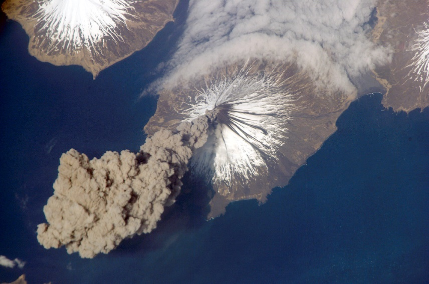
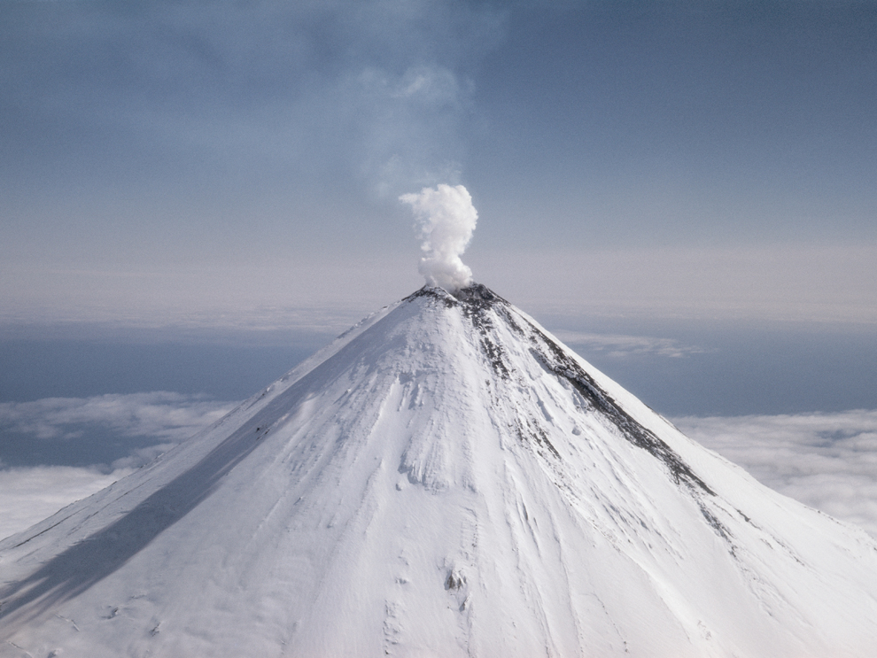

What is a pyroclastic flow?

A pyroclastic flow is the most destructive aspect of a volcano eruption,
and usually accounts for the most casualties in a volcanic eruption, assuming an eruption doesn't trigger an earthquake.
It is a super-heated mix of rock fragments,
toxic gases, and ash that flows rapidly.
Read More
What is an ash cloud?

The ash cloud of a volcanic eruption is a mixture of water vapor, glass particles, and minerals carried
winds from the center of a volcanic eruption. These particles are hazardous to people and aviators and can travel long distances.
It is important to consider wind direction and speed when considering an ash cloud,
however for the purposes of the Volcano Map we use a circular buffer to indicate a possible ash cloud in any direction.
Read More
What types of volcanoes are the most dangerous?

The most dangerous types of volcanoes are supervolcanoes such as Yellowstone and stratovolcanoes, such as Krakatoa.
Supervolcanoes can potentially cause continental wide destruction, but more commonly stratovolcanoes cause the biggest
amounts of destruction. Stratovolcanoes are typically found in the Pacific Rim of fire and account for most of the volcanoes
modelled in our website, with exception to Yellowstone. Stratovolcanoes have highly dangerous pyroclastic flows but also can trigger
natural disasters such as tsunamis and earthquakes.
Read More